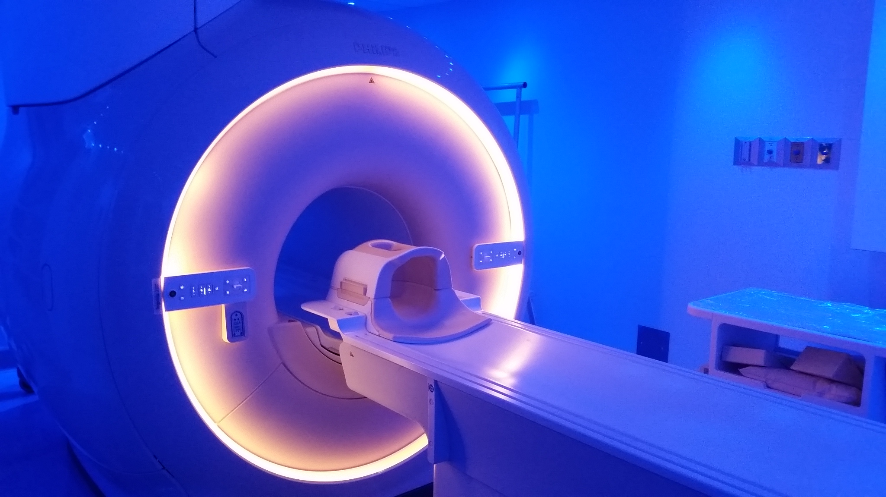
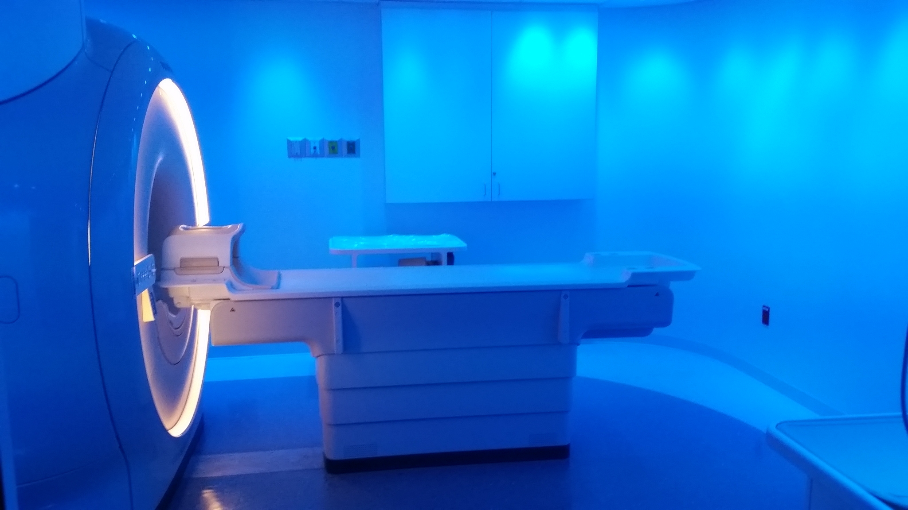
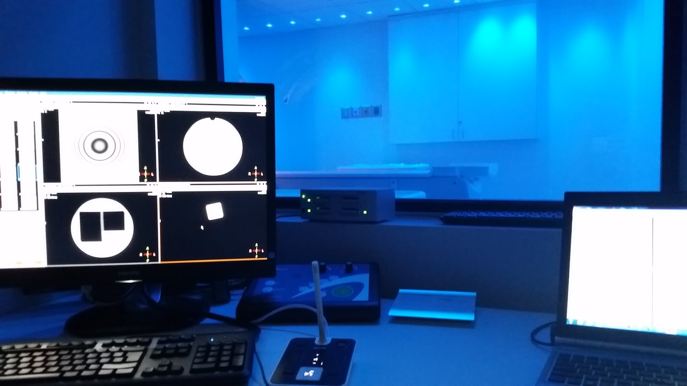

Experiencia práctica en MRI, CT y PET — con profundo dominio de Philips MRI y CT — más una red de servicio de confianza que se extiende a rayos X y sala de cateterismo / intervencionismo. Cómodos con todos los principales fabricantes (OEM), en EE. UU. e internacionalmente.
Viajes nacionales e internacionales · soporte bilingüe (Español / English)Desde los sistemas con los que trabajamos a diario hasta los que cubre nuestra red — una sola llamada para lo que tenga en su sala.
Dominio experto de Philips MRI (Achieva, Ingenia) — y fluidez con todos los principales fabricantes.
ExpertoDominio experto de Philips CT (Brilliance, Ingenuity) — diagnóstico, mantenimientos preventivos y reparaciones — más otros fabricantes.
ExpertoSoporte de imágenes moleculares, práctico y a través de nuestra red ampliada de fabricantes.
PrácticoSalas de rayos X, equipos portátiles y arcos en C — cubiertos directamente y mediante socios de confianza.
Red + directoAngiografía y salas intervencionistas (p. ej., Philips Azurion / Allura) a través de nuestra red de servicio.
Red + directoCon enfoque en Philips por trayectoria — pero hemos trabajado en Siemens, GE, Canon/Toshiba y otros sin problemas. ¿Tiene algo poco común? Hablemos; probablemente ya lo hemos manejado o podemos darle soporte a través de nuestra red.
Desde una sola llamada de diagnóstico hasta una instalación o desinstalación completa — con respuesta rápida cuando no puede permitirse tiempo de inactividad.
Diagnóstico, resolución de problemas, reparaciones y auditorías de rendimiento — más mantenimientos preventivos (PM) para mantener los sistemas confiables.
Instalaciones, actualizaciones, desinstalaciones y reubicaciones, con soporte integral de programas multimarca.
Soporte técnico sénior multimarca en sitio donde lo necesite — viajes nacionales e internacionales disponibles.
Un vistazo a las salas y consolas que B&R mantiene en funcionamiento cada día.



Desarrolle la confianza de su equipo en MRI Philips (Achieva, Ingenia) y CT (Brilliance, Ingenuity) sin enviar al personal lejos durante semanas.
Capacitación práctica donde están sus sistemas — minimizando el tiempo de inactividad, sin viajes prolongados.
Adaptada a todos los niveles, con soporte bilingüe en español e inglés.
Disponibles para viajar por EE. UU., América Latina y más allá.
Cuéntenos con qué trabaja y qué necesita — servicio, una instalación o capacitación. Le responderé pronto.